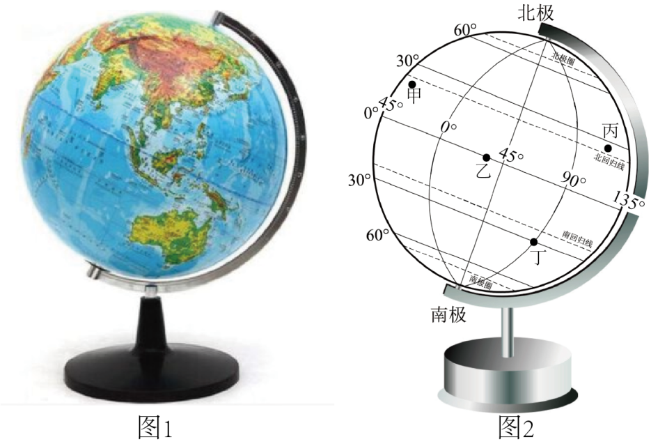

2026年北京平谷区初中学业合格考试地理试卷 · 选择题 第1、2、3、4、5题
地球仪是地球的模型。图1是地球仪图片，图2是地球仪示意图。读图，完成下面小题。

1. 地球仪能够直观表示的地球特征是（ ）
A. 地球的实际大小B. 地球的真实形状
C. 地球的实际面积D. 地球的海陆分布状况
2. 地球仪上（ ）
A. 地轴垂直于经线B. 纬线长度都相等
C. 经线相交于极点D. 赤道是个半圆
3. 图2中（ ）
A. 甲地位于北温带B. 乙地全年昼夜等长
C. 丙地位于南半球D. 丁地有极昼极夜现象
某同学通过“一笔画世界”活动学习世界的海陆分布。下图为该同学的作品。读图，完成下面小题。

4. “一笔画世界”过程中（ ）
A. 赤道穿过北美洲中部B. 南极洲被四大洋包围
C. 亚洲的面积大于欧洲D. 180°经线贯穿大西洋
5. 该同学的作品中，没有画出的是（ ）
A. 大洋洲B. 欧洲C. 南极洲D. 非洲